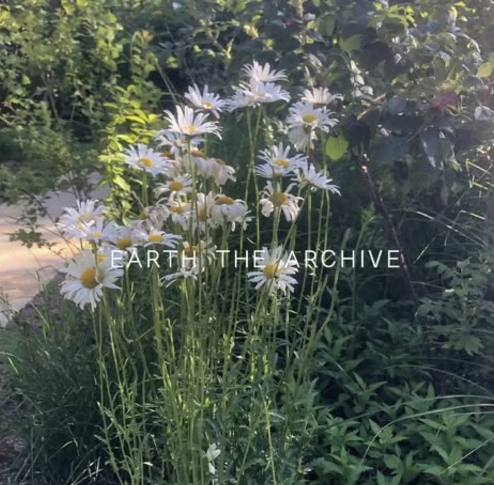
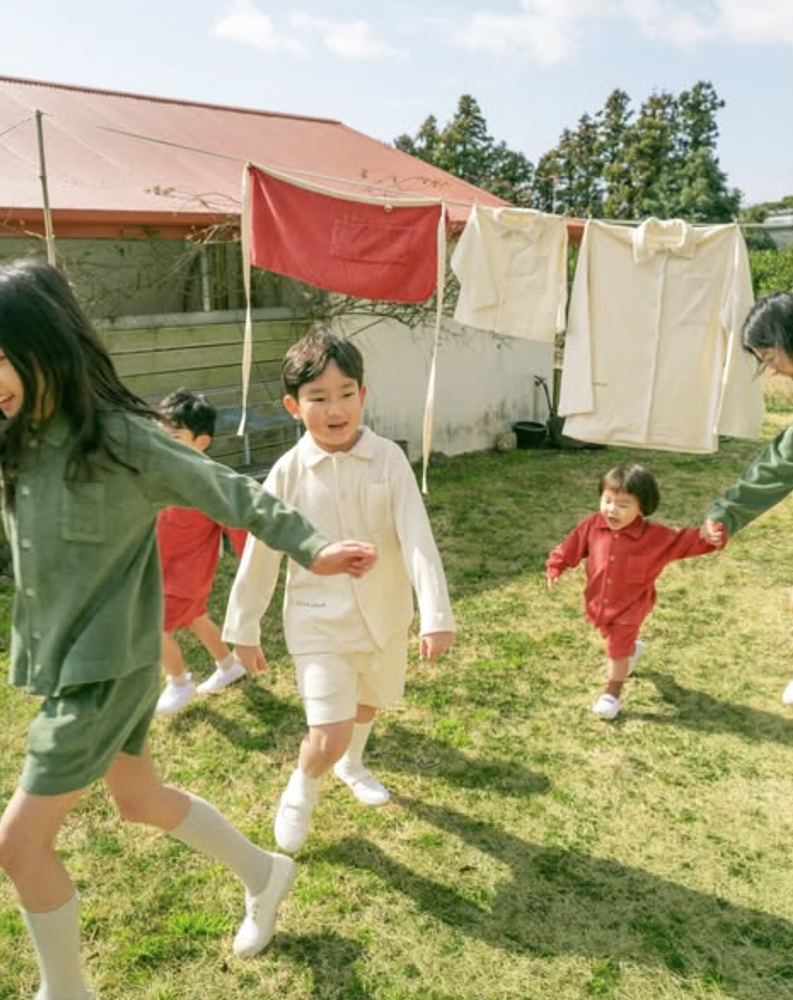
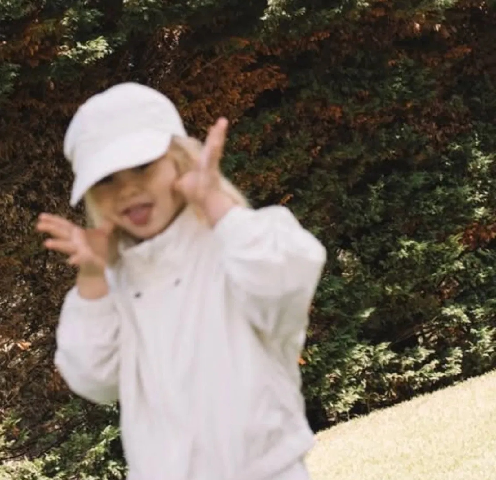
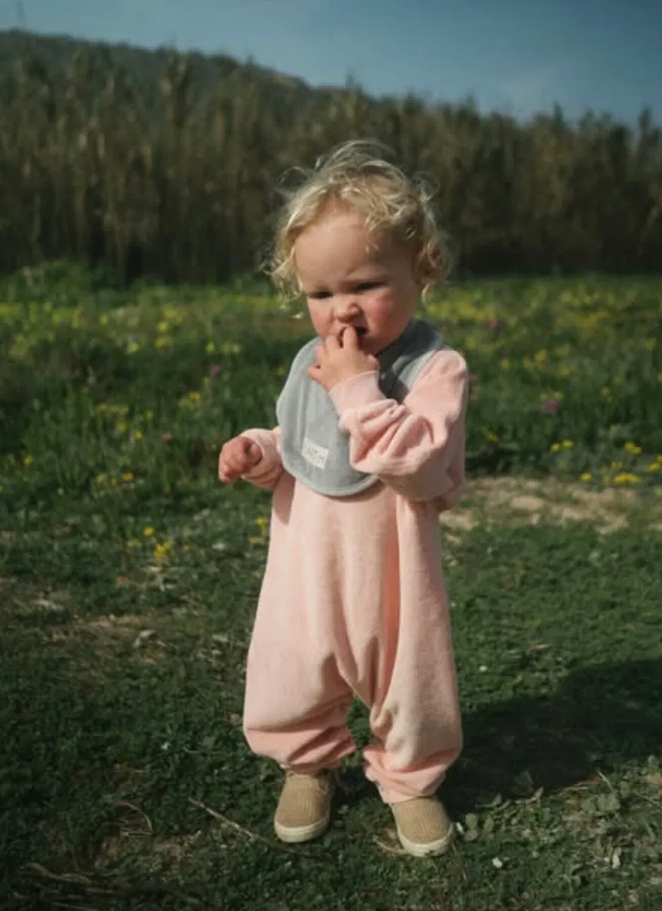
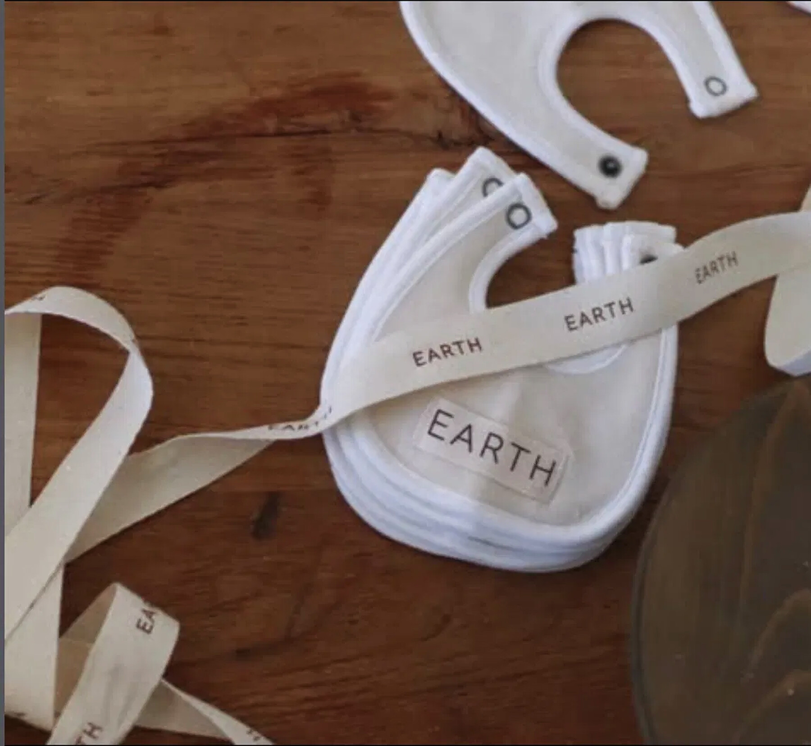
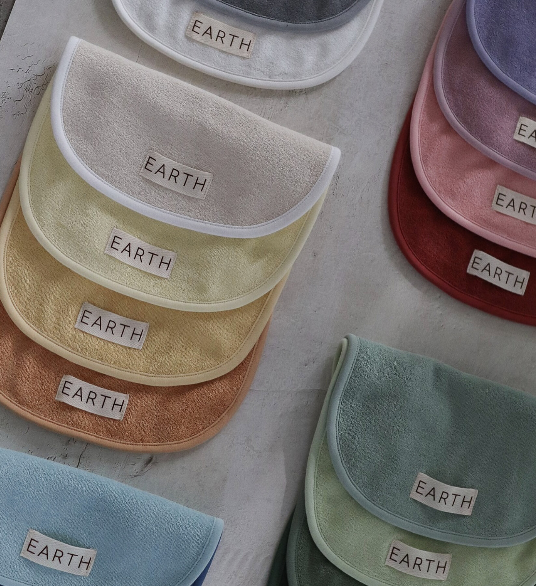
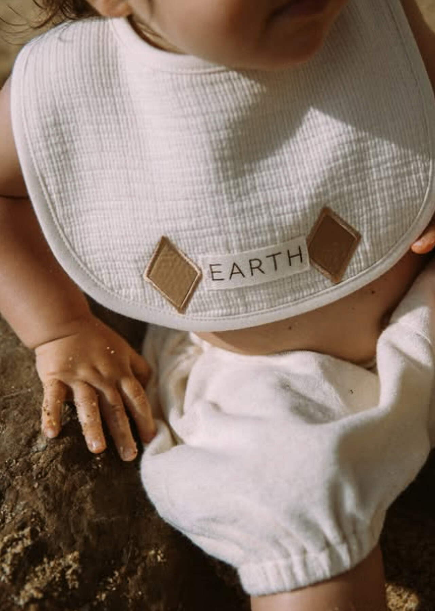
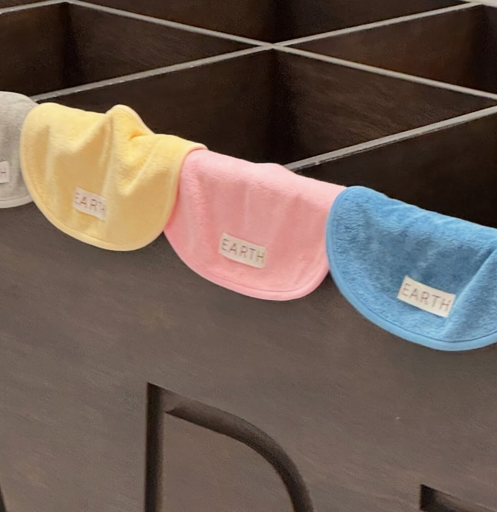
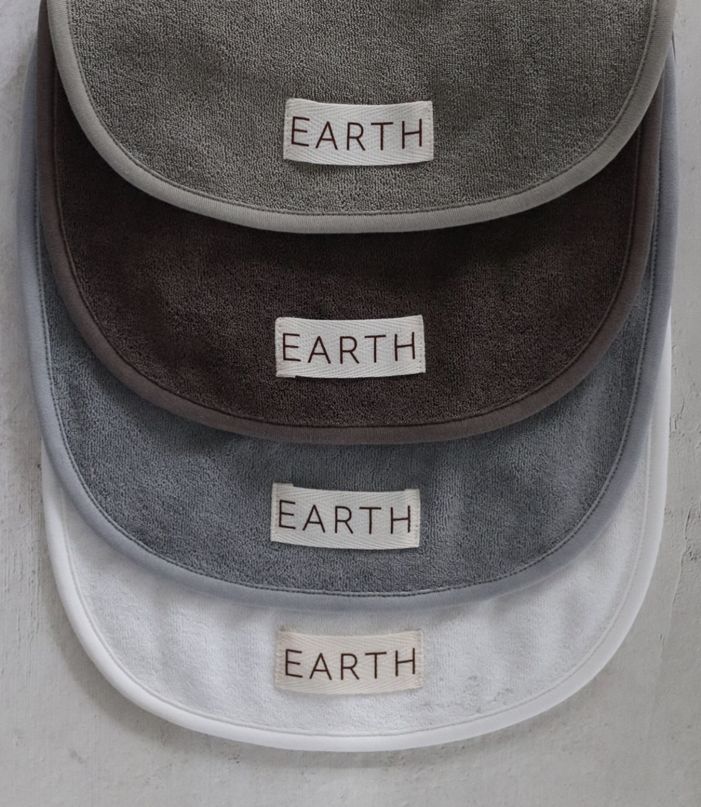
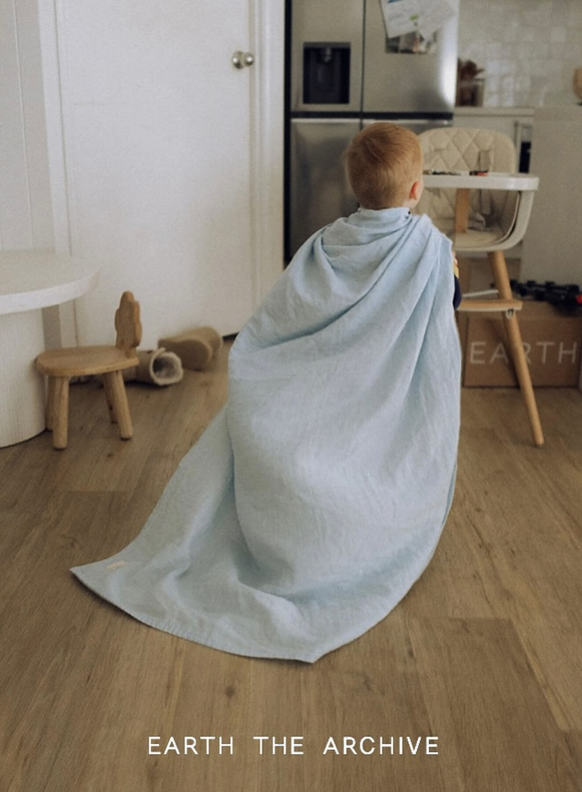

A Seoul-born studio turning plants into pigment and GOTS organic cotton into the softest, most quietly beautiful wardrobe a new person could be handed. Here is the case — made plainly, made warmly — for dressing a baby in something grown rather than manufactured.
Jaden & Ngoc — and the one still choosing a name. (Archer? Charles?) May your first wardrobe be as gentle as you are new.
What's folded in this box is, quietly, the most fought-over name in Korean kidswear — a botanical-dye house whose terry pieces sell out in under a minute and whose restocks parents stalk like concert tickets. Getting it is the hard part; you already have it. Consider the pages that follow a field guide to what you're holding.

EARTH THE ARCHIVE — 얼스디아카이브 in its native Korean — is a Seoul botanical-dye house making clothing for babies and small children. Founded in 2021, it has grown into one of the most talked-about names in Korean kidswear on a single, almost old-fashioned conviction: that color should come from plants, and that cloth worn by a newborn should be clean enough to trust without a second thought.
The premise is easy to say and hard to do. Every piece is cut from 100% GOTS-certified organic cotton — the strictest organic-textile standard there is — and colored with natural botanical dye: no synthetic pigment, no chemical fixative to freeze a shade in place. The studio designs out the pinching seams and tight elastics of ordinary baby clothes, and lets each garment soften, and quietly shift in color, the longer it is worn.
And it is famous for one small thing done exceptionally well — the terry bib: so absorbent, so soft, and so coveted that, in Korea, simply buying one has turned into a minor national sport. (More on that shortly.)


Indigo leaf, madder root, the skins of things — natural dyes have colored cloth for four thousand years, long before aniline and petroleum entered the picture. EARTH leans entirely into that lineage. Because even one species of plant carries different pigment from harvest to harvest, no two runs are identical. A sage is never quite the same sage twice.
The trade-off is honest and worth naming: without artificial fixatives, the colors shift and mellow with washing and sun. Most parents read this as the good kind of patina — a garment that visibly remembers the season your child wore it. If you need a shade frozen forever, this is the wrong shelf. If you want clothing that ages like linen and leather do, it's exactly right.

The house signatures — earthy neutrals and soft greens that photograph like a film still and read beautifully against any skin.

The terry bib — absorbent, impossibly soft, and the piece that built the whole house.


Plant-dyed organic cotton rewards a gentle hand. None of this is hard — it's the same care you'd give good linen, plus one bit of universal baby-clothing sense.


For a baby with sensitive skin, or parents who simply love the high, hushed, minimalist look — this is as good as a first wardrobe gets. Beautifully made, genuinely organic, and quietly impossible to find a second of. Buy the bib. Then the rest.